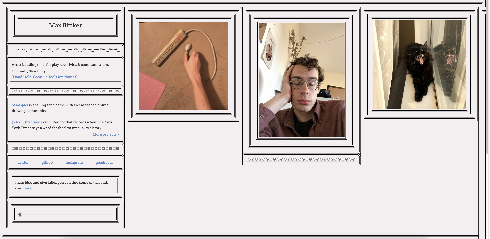
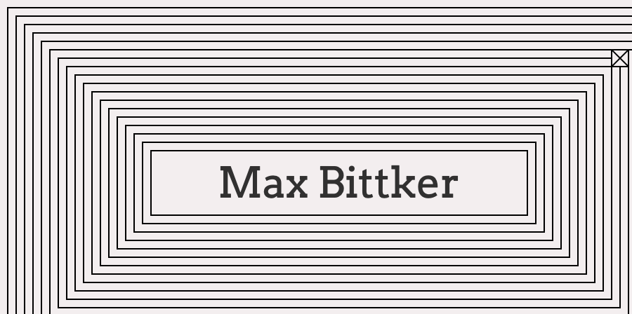
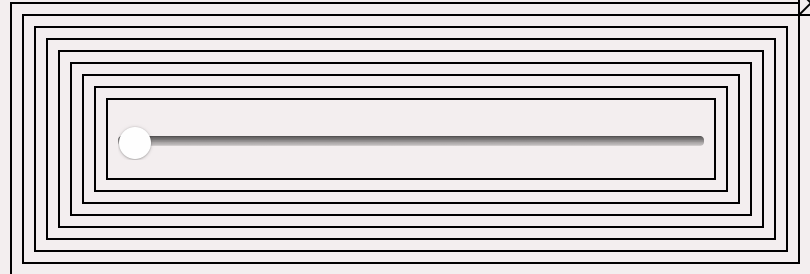
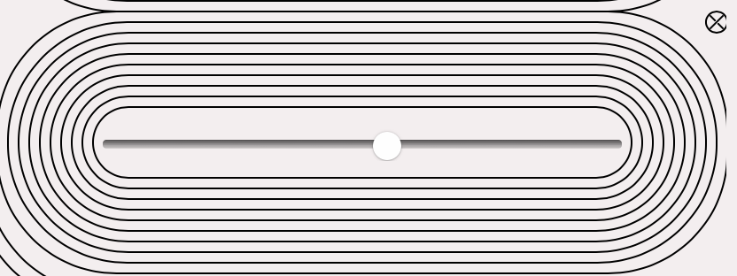
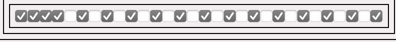
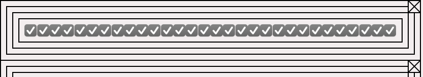

I have chosen Max Bittker's portfolio website

Week 2
Q1) Spend two minutes with the experience and list all of your actions in granular detail.
- On first loading the website I noticed all the lines around all the different elements on the screen.
- Next my eye was drawn toward maxs' name on the screen.

- I noticed the little gif dancing around.
- Then noticed all the little x symbols to the top right of all the sections.
- I wondered if you could click on them so i did, it removed that section from the screen. I deleted maxs name...
- Not wanting to remove all the elements i started to look around the screen a bit more.
- I then discovered a slider that could make the lines rounded.
 
- After playing with the slider for awhile I got bored and began to look at some of the other interactive elements onscreen.
- You can tick all these boxes it was pretty satisfying.
 
Q2) What was the first thing you paid attention to when interacting with the experience?
Firstly I noticed all the lines surrounding everything but the first thing I truely interacted with was the x symbol.
Q3) What did you spend the most time engaging with?
I spent the most time egaging with the line adjustment fader.
Q4) What was the most common action in your two minute interaction with the experience?
Adjusting the line fader I just found it really satisfying. I wish you could automate your movements.
Q5 What is your impression of the intended primary goal of the interactive experience?
I belive the intended primary goal was to have fun and interact with maxs page. I think it lets visitors know about maxs personality and approach to design
Q6) How does the experience communicate it's primary goal?
By having a simple layout with minimal elements on screen I beleive Max was able to communicate a simple design that is easy to interact with
Q7) What is your impression of the intended length of a single interaction and how often you are intended to interact with the experience?
I think the intended length is entirely user specific for instance I spent way to long tick and unticking boxes for no apparent reason
Week 3
Q8) What metaphor or metaphors does the experience's mental model reference?
I believe Max is trying to play on the idea that digital media can be seen as easily dispensable.
His page is fun and interactive it expects that you are going to play with everything.
Eventually you're going to get bored and start to delete every element, only to be left with nothing.
Q9) What does this reference suggest about how you should feel and/or act when engaging with it?
I feel it suggest that you should have fun with the website. You shouldnt be to worried about your actions,
instead have fun and just experience the website.
Q10) What is the most frustrating element of the interaction and what makes it frustrating to you?
What I found most frustrating was clicking on the ticks. I found this so frustrating becauce it brought my experience down, if only for a second.
I wish they were a bit bigger, I think it would help users freely click around more.
Q11) What is the most satisfying element of the interaction and what makes it satisfying to you?
I loved the slider that smoothed out the lines. When the lines were rounded, I think it gave the website a calmer feel. I love that you have access to adjust it how ever you like and it just stays like that.